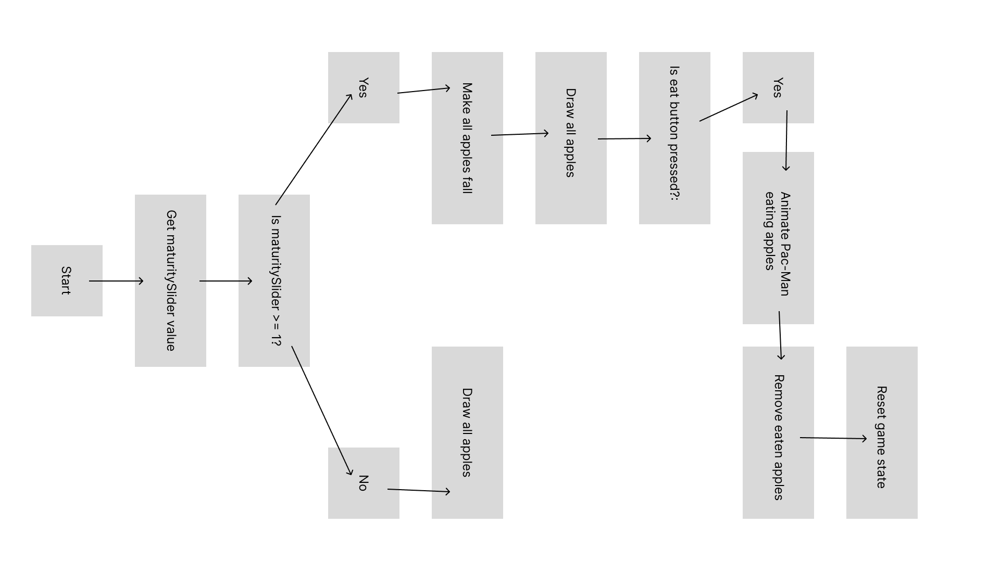

UML diagram

Flow chart
Reading 1

Process: I wanted to load a tree image as the background and display it centered on the canvas. Using the preload function, I loaded the image and displayed it with image in the draw function. However, the tree image was too large and exceeded the canvas size.
Problem: The tree image was larger than the canvas, causing it to be cropped.
Solution: I resized the image to 400x400 pixels and adjusted its position to center it within the canvas.
Process: I implemented functionality to generate apples at random positions on the canvas when the mouse was clicked. Each apple was represented by a simple ellipse, and their positions were stored in an array. The apples were drawn inside the draw function.
Problem: Some apples were overlapping when generated, creating a cluttered appearance.
Solution: I noted the overlap issue and decided to address it in the next step by ensuring no two apples overlapped.
Process: To avoid overlapping apples, I introduced a do-while loop that checked the distance between the new apple and all existing apples. If the distance was less than 30 pixels, I regenerated the position until there was no overlap.
Problem: When the canvas became crowded, the loop struggled to find a valid position, potentially causing performance issues.
Solution: I added a maximum number of apples (MAX_APPLES) to limit the number of apples that could be generated, ensuring there was enough space on the canvas.
Process: To enable dynamic changes in apple appearance, I added a slider to represent apple maturity. The slider values ranged from 0 to 1, starting at 0. I planned to use this value to control apple behavior in the next steps.
Problem: The slider was successfully added to the canvas, but at this stage, it had no effect on the apples.
Solution: I moved on to implement a connection between the slider value and apple appearance in the following step.
Process: Using the slider value, I implemented a color gradient for the apples that transitioned from green to red. The map function was used to calculate RGB values based on the slider position. The apples' colors now dynamically changed in real time as the slider was moved.
Problem: The logic for the color gradient was functional but made the code lengthy and repetitive.
Solution: I encapsulated the gradient logic into a drawApple function, making the code modular and easier to maintain.
Process: I added functionality for apples to fall from the tree when the slider reached its maximum value (1). Each apple was given an isFalling property, and its y coordinate was updated to simulate falling.
Problem: Initially, apples fell too quickly, reaching the ground instantly. Additionally, apples continued falling through the ground.
Solution: I introduced random fall speeds for the apples and set a ground level (GROUND_Y). Once an apple's y position exceeded this ground level, it stopped falling.
Process: To ensure apples stopped falling once they hit the ground, I added a condition to reset their position to the ground level and marked their isFalling property as false.
Problem: Without resetting the isFalling property, some apples incorrectly continued trying to fall, even though they had already reached the ground.
Solution: I explicitly set isFalling to false for any apple that reached the ground, resolving the logic error.
Process: I added a Pac-Man character that moved from the left to the right of the canvas, simulating eating apples on the ground. When Pac-Man's position overlapped with an apple's, the apple was removed from the array.
Problem: The collision detection was initially too strict, causing some apples to be missed.
Solution: I adjusted the collision detection range, comparing Pac-Man's x coordinate with the apple's center position to ensure smoother and more accurate interactions.
Process: To make Pac-Man more dynamic, I added an opening and closing mouth animation. Using a frame counter (mouthFrameCount), I toggled the mouth state every 10 frames.
Problem: Initially, the mouth animation switched too quickly, making it look unnatural.
Solution: I adjusted the toggle interval to every 10 frames and reset the frame counter when Pac-Man was reset, ensuring the animation started consistently each time.
Process: I implemented a reset function to restore the game to its initial state after Pac-Man moved off the screen. This reset cleared all apples, reset the slider value, and returned Pac-Man to its starting position.
Problem: Occasionally, the apple array wasn't cleared properly during the reset, leaving leftover apples in the game.
Solution: I explicitly cleared the apple array and reset all relevant game states, ensuring that the slider, Pac-Man, and apples returned to their initial states. This created a seamless game loop.
You can view the full project and interact with it using the following link:
View Project on p5.js Editor